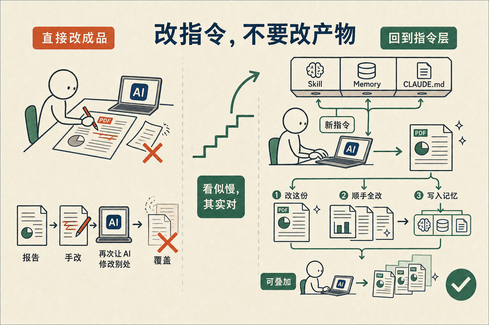

最近没日没夜地用 Claude Code 作为主要的平台做任何事情，得到一个非常重要的经验：要抑制住直接修改 AI 生成产物的冲动，而要从 Skill、Memory、CLAUDE.md 等层面去解决问题。
比如最近我需要准备一些证据材料，就把几年的微信聊天记录录屏以后交给 Claude Code，帮我分析里面的对话内容，结果生成了一份详细的 PDF 报告。
这个时候如果我对这份最终的报告有任何不满，最习惯的方法当然是直接在 PDF 里面修改——删几个字，加几句话，或者干脆把其中几页删掉。
但是，一定一定要抑制住这个冲动。这种修改是没有前途的。
一定要回到 Claude Code，重新把需求说一遍，比如「不要前面的封面，报告尽量简洁」。它会一口气做三件事：
这样当你下次还有别的修改的时候，可以在这次的改动上叠加。
甚至在做别的修改的时候，这一条原则也会跟着，一劳永逸地解决类似的问题，在未来生成类似文档的时候继续发挥效果。
否则的话，你直接改结果，这边改完了，然后又用 Claude Code 帮你改另外的东西，前一次的改动就被覆盖掉了。除非你能保证这次是你做的最后一次改动——但这种情况基本上并不存在。
所以，无论 AI 生成的是什么——图片、文章、代码、PDF——都要抑制住那种直接去改成品的冲动。
现在去修改指令的那一层，看似多此一举，不顺手，时间也不见得最快。
但这是正确的方法。
